pacman::p_load(tidyverse,tsibble,feasts,fable,seasonal,tidymodels,timetk,modeltime,forecast,ggplot2)Take-home_Ex3
Prototyping Modules for Visual Analytics Shiny Application
1.0 Install and Load R packages
2.0 Import Data
weather <- read_csv("data/weather.csv")glimpse(weather)Rows: 6,222
Columns: 13
$ station <chr> "Paya Lebar", "Paya Lebar", "Paya Lebar", …
$ year <dbl> 2024, 2024, 2024, 2024, 2024, 2024, 2024, …
$ month <dbl> 1, 1, 1, 1, 1, 1, 1, 1, 1, 1, 1, 1, 1, 1, …
$ day <dbl> 1, 2, 3, 4, 5, 6, 7, 8, 9, 10, 11, 12, 13,…
$ daily_rainfall_total_mm <dbl> 21.6, 0.0, 1.6, 63.8, 4.4, 3.0, 59.8, 0.0,…
$ highest_30_min_rainfall_mm <dbl> 9.2, 0.0, 1.6, 13.8, 1.6, 3.0, 15.4, 0.0, …
$ highest_60_min_rainfall_mm <dbl> 13.2, 0.0, 1.6, 19.8, 3.0, 3.0, 17.4, 0.0,…
$ highest_120_min_rainfall_mm <dbl> 14.6, 0.0, 1.6, 26.6, 3.2, 3.0, 21.8, 0.0,…
$ mean_temperature_c <dbl> 25.9, 27.8, 27.7, 25.0, 26.8, 28.1, 24.6, …
$ maximum_temperature_c <dbl> 28.8, 32.6, 32.6, 26.9, 30.8, 33.1, 27.3, …
$ minimum_temperature_c <dbl> 24.5, 24.2, 25.5, 23.7, 24.5, 24.9, 23.5, …
$ mean_wind_speed_km_h <dbl> 6.5, 7.0, 7.1, 7.2, 8.4, 7.6, 4.9, 8.5, 7.…
$ max_wind_speed_km_h <dbl> 24.1, 31.5, 29.6, 25.9, 35.2, 27.8, 18.5, …3.0 Data Wrangling
3.1 Convert year, month, and day into single date column
weather <- weather %>%
mutate(date = make_date(year, month, day)) %>%
arrange(date)3.2 Remove missing values
weather <- weather %>%
drop_na()3.3 Convert to time-series format
ts_data <- weather %>%
as_tsibble(index = date, key = station) %>%
fill_gaps()ts_data# A tsibble: 5,216 x 14 [1D]
# Key: station [16]
station year month day daily_rainfall_total_mm highest_30_min_rainfall…¹
<chr> <dbl> <dbl> <dbl> <dbl> <dbl>
1 Admiralty 2024 1 1 8.5 2
2 Admiralty 2024 1 2 0.5 0.5
3 Admiralty 2024 1 3 1.5 1.5
4 Admiralty 2024 1 4 67.6 10.6
5 Admiralty 2024 1 5 5.4 2.2
6 Admiralty 2024 1 6 0.8 0.8
7 Admiralty 2024 1 7 69.6 17.4
8 Admiralty 2024 1 8 1.6 1.2
9 Admiralty 2024 1 9 49 17.2
10 Admiralty 2024 1 10 63.2 17.4
# ℹ 5,206 more rows
# ℹ abbreviated name: ¹highest_30_min_rainfall_mm
# ℹ 8 more variables: highest_60_min_rainfall_mm <dbl>,
# highest_120_min_rainfall_mm <dbl>, mean_temperature_c <dbl>,
# maximum_temperature_c <dbl>, minimum_temperature_c <dbl>,
# mean_wind_speed_km_h <dbl>, max_wind_speed_km_h <dbl>, date <date>4.0 Time-Series Visualization
4.1 Single time-series
ts_data %>%
filter(station == "Paya Lebar") %>%
ggplot(aes(x = date,
y = mean_temperature_c))+
geom_line(size = 0.5)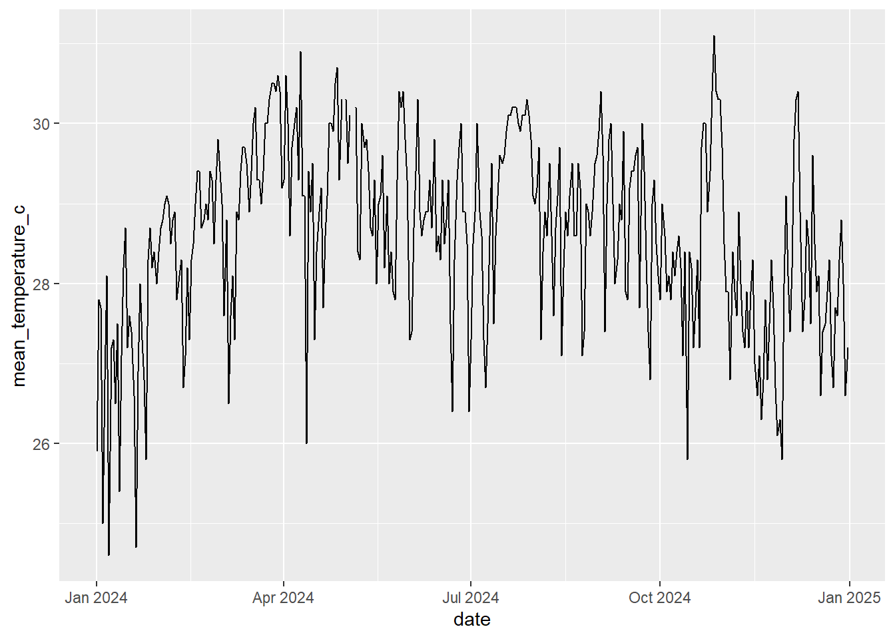
4.2 Multiple time-series
ggplot(data = ts_data,
aes(x = date,
y = mean_temperature_c,
color = station))+
geom_line(size = 0.5) +
theme(legend.position = "bottom",
legend.box.spacing = unit(0.5, "cm"))+
labs(title = "Mean Temperature Over Time", y = "Temperature (°C)")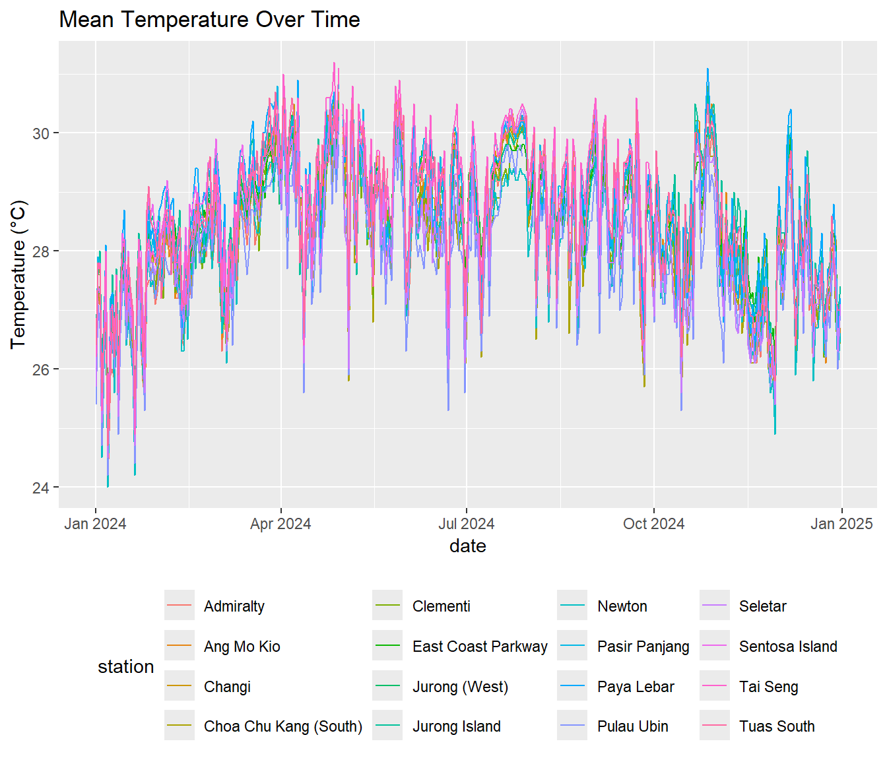
4.3 facet_wrap() for effective comparison of multiple line graph
ggplot(data = ts_data,
aes(x = date,
y = mean_temperature_c))+
geom_line(size = 0.5) +
facet_wrap(~ station,
ncol = 3,
scales = "free_y") +
theme_bw()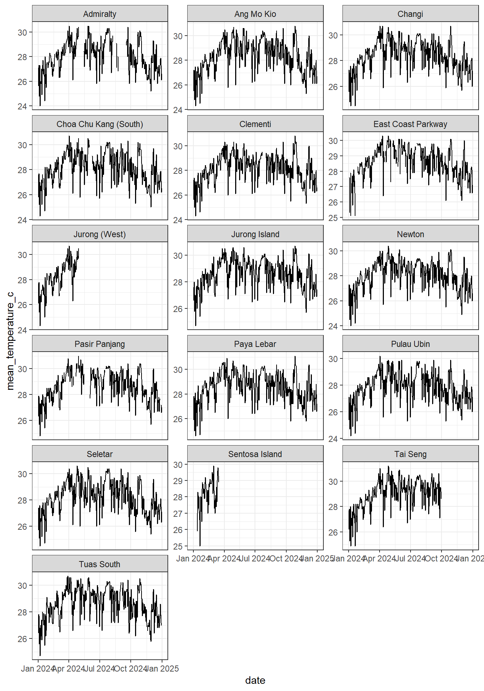
5.0 Visual Analysis of Time-series data
5.1 Seasonality with seasonal plot
ts_data %>%
filter(station == "Admiralty" |
station == "Paya Lebar" |
station == "Clementi" |
station == "Changi") %>%
fill_gaps() %>%
gg_season(mean_temperature_c)+
labs(title = "Seasonal Plot", y = "Temperature (°C)")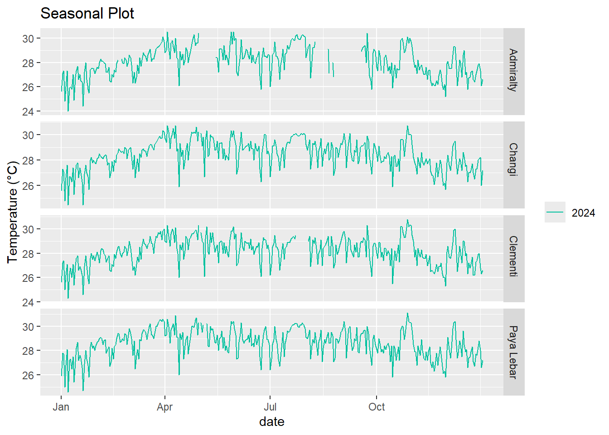
5.2 Cycle Plot
ts_data %>%
filter(station == "Admiralty" |
station == "Changi") %>%
autoplot(mean_temperature_c) +
facet_grid(station ~ ., scales = "free_y")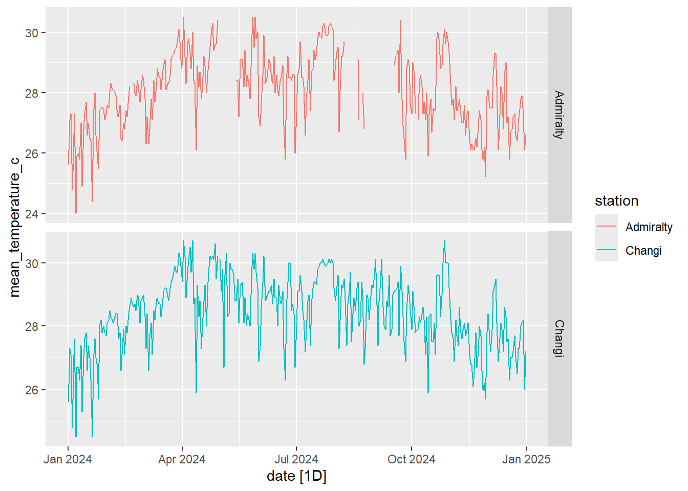
6.0 Time series decomposition
6.1 ACF plot of Daily Mean Temperature
ts_data %>%
filter(station == "Changi") %>%
ACF(mean_temperature_c) %>%
autoplot()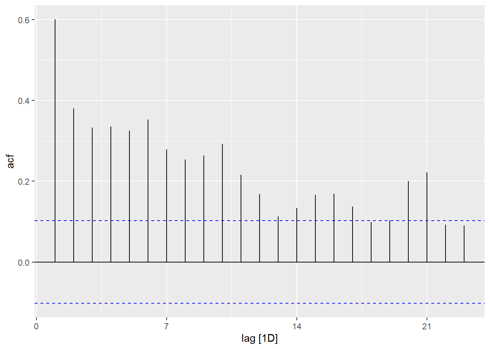
6.2 PACF plot of Daily Mean Temperature
ts_data %>%
filter(station == "Changi") %>%
PACF(mean_temperature_c) %>%
autoplot()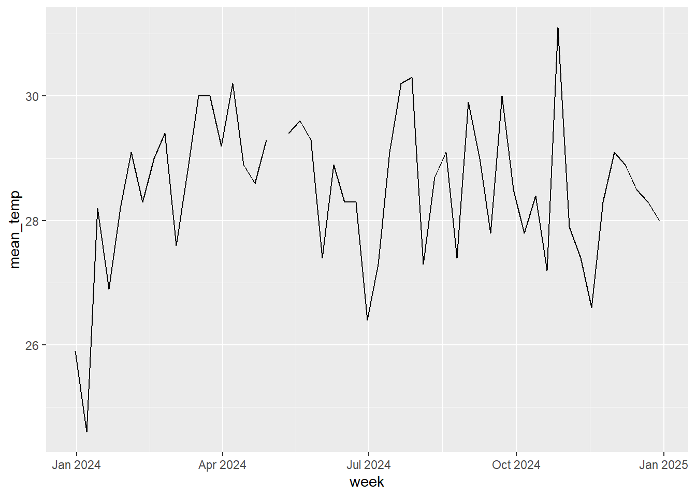
7.0 STL Decomposition
ts_data <- ts_data %>%
fill_gaps() %>%
mutate(mean_temperature_c = na.interp(mean_temperature_c))ts_data %>% count(is.na(mean_temperature_c))# A tibble: 1 × 2
`is.na(mean_temperature_c)` n
<lgl> <int>
1 FALSE 5216ts_data %>%
filter(!is.na(mean_temperature_c)) %>%
model(STL(mean_temperature_c ~ season(window = "periodic"))) %>%
components() %>%
autoplot()
5.0 STL Decomposition
ts_data %>%
fill_gaps() %>% # Convert implicit gaps to explicit missing values
mutate(mean_temperature_c = na.interp(mean_temperature_c)) %>% # Interpolate missing values
filter(station == "Paya Lebar") %>%
model(STL(mean_temperature_c ~ season(window = "periodic"))) %>%
components() %>%
autoplot()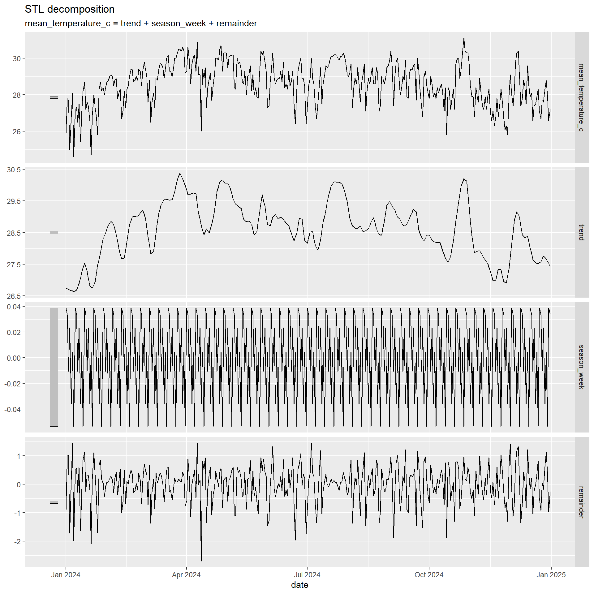
6.0 Classical Decomposition
ts_data %>%
fill_gaps() %>% # Convert implicit gaps to explicit missing values
mutate(mean_temperature_c = na.interp(mean_temperature_c)) %>%
filter(station == "Changi") %>%
model(
classical_decomposition(
mean_temperature_c, type = "additive")) %>%
components() %>%
autoplot()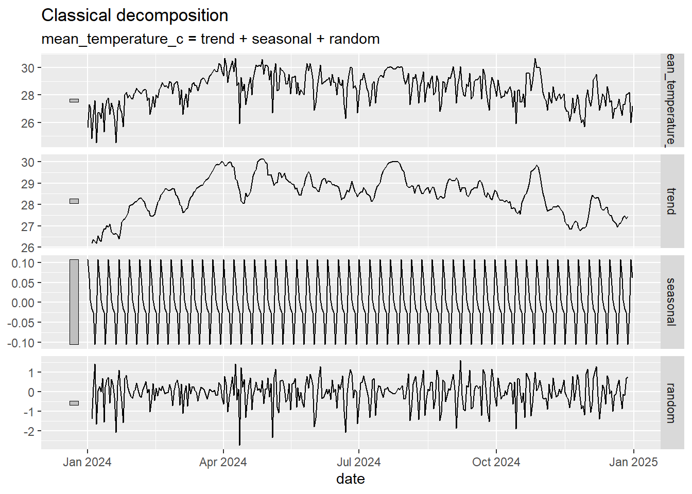
7.0 Visual Forecasting
7.1 Data Sampling
Changi_ts <- ts_data %>%
filter(station == "Changi") %>%
mutate(Type = if_else(
date >= "2024-10-01",
"Hold-out", "Training"))Changi_train <- Changi_ts %>%
filter(date < "2024-10-01")Changi_train %>% fill_gaps()# A tsibble: 274 x 15 [1D]
# Key: station [1]
station year month day daily_rainfall_total_mm highest_30_min_rainfall_mm
<chr> <dbl> <dbl> <dbl> <dbl> <dbl>
1 Changi 2024 1 1 49.6 24.6
2 Changi 2024 1 2 0.4 0.4
3 Changi 2024 1 3 8.8 8.2
4 Changi 2024 1 4 80.6 17.6
5 Changi 2024 1 5 4.2 3
6 Changi 2024 1 6 0.6 0.6
7 Changi 2024 1 7 64 12.8
8 Changi 2024 1 8 0 0
9 Changi 2024 1 9 2.6 0.8
10 Changi 2024 1 10 63.2 19
# ℹ 264 more rows
# ℹ 9 more variables: highest_60_min_rainfall_mm <dbl>,
# highest_120_min_rainfall_mm <dbl>, mean_temperature_c <dbl>,
# maximum_temperature_c <dbl>, minimum_temperature_c <dbl>,
# mean_wind_speed_km_h <dbl>, max_wind_speed_km_h <dbl>, date <date>,
# Type <chr>Changi_train_imputed <- Changi_train %>%
mutate(mean_temperature_c = zoo::na.approx(mean_temperature_c))
Changi_train_imputed %>%
model(stl = STL(mean_temperature_c)) %>%
components() %>%
autoplot()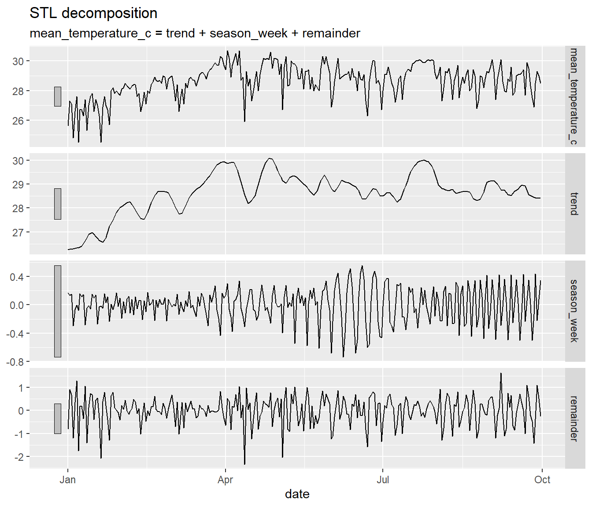
7.2 Fitting Forecasting Model
7.2.1 Fitting ETS Model
ETS(y ~ error(c("A", "M"))
+ trend(c("N", "A", "Ad"))
+ season(c("N", "A", "M"))
)<ETS model definition>7.2.2 Fitting simple ETS
ses <- Changi_train_imputed %>%
model(ETS(mean_temperature_c ~ error("A")
+ trend("N")
+ season("N")))
ses# A mable: 1 x 2
# Key: station [1]
station `ETS(mean_temperature_c ~ error("A") + trend("N") + season("N"))`
<chr> <model>
1 Changi <ETS(A,N,N)>7.2.3 Check model assumptions
gg_tsresiduals(ses)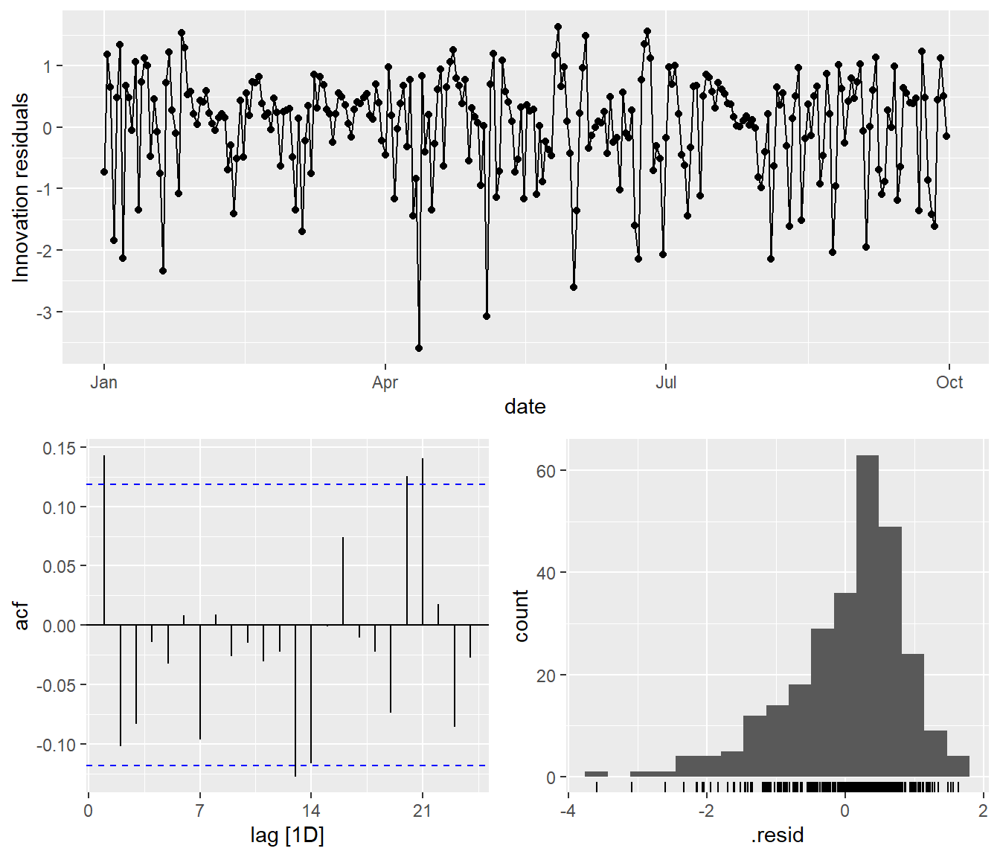
7.2.4 Model’s report
ses %>%
report()Series: mean_temperature_c
Model: ETS(A,N,N)
Smoothing parameters:
alpha = 0.2852897
Initial states:
l[0]
26.32362
sigma^2: 0.7308
AIC AICc BIC
1456.047 1456.136 1466.887 7.2.5 Holt’s Linear Method
Changi_Holt <- Changi_train_imputed %>%
model(`Holt's method` =
ETS(mean_temperature_c ~ error("A") +
trend("A") +
season("N")))
Changi_Holt %>% report()Series: mean_temperature_c
Model: ETS(A,A,N)
Smoothing parameters:
alpha = 0.2807998
beta = 0.0001000422
Initial states:
l[0] b[0]
26.28793 0.008576169
sigma^2: 0.7356
AIC AICc BIC
1459.812 1460.036 1477.878 gg_tsresiduals(Changi_Holt)7.2.6 Holt-Winters
Changi_HW <- Changi_train_imputed %>%
model(
Additive = ETS(mean_temperature_c ~ error("A")
+ trend("A")
+ season("A")),
Multiplicative = ETS(mean_temperature_c ~ error("M")
+ trend("A")
+ season("M"))
)
Changi_HW %>% report()# A tibble: 2 × 10
station .model sigma2 log_lik AIC AICc BIC MSE AMSE MAE
<chr> <chr> <dbl> <dbl> <dbl> <dbl> <dbl> <dbl> <dbl> <dbl>
1 Changi Additive 0.738 -722. 1467. 1469. 1511. 0.708 0.793 0.653
2 Changi Multiplicative 0.000962 -731. 1486. 1487. 1529. 0.755 0.813 0.0237multi_ETS <- Changi_train_imputed %>%
model(`SES` = ETS(mean_temperature_c ~ error("A") +
trend("N") +
season("N")),
`Holt`= ETS(mean_temperature_c ~ error("A") +
trend("A") +
season("N")),
`damped Holt` =
ETS(mean_temperature_c ~ error("A") +
trend("Ad") +
season("N")),
`WH_A` = ETS(
mean_temperature_c ~ error("A") +
trend("A") +
season("A")),
`WH_M` = ETS(mean_temperature_c ~ error("M")
+ trend("A")
+ season("M"))
)multi_ETS %>%
tidy()# A tibble: 35 × 4
station .model term estimate
<chr> <chr> <chr> <dbl>
1 Changi SES alpha 0.285
2 Changi SES l[0] 26.3
3 Changi Holt alpha 0.281
4 Changi Holt beta 0.000100
5 Changi Holt l[0] 26.3
6 Changi Holt b[0] 0.00858
7 Changi damped Holt alpha 0.279
8 Changi damped Holt beta 0.000100
9 Changi damped Holt phi 0.976
10 Changi damped Holt l[0] 25.8
# ℹ 25 more rowsmulti_ETS %>%
report()# A tibble: 5 × 10
station .model sigma2 log_lik AIC AICc BIC MSE AMSE MAE
<chr> <chr> <dbl> <dbl> <dbl> <dbl> <dbl> <dbl> <dbl> <dbl>
1 Changi SES 0.731 -725. 1456. 1456. 1467. 0.725 0.817 0.659
2 Changi Holt 0.736 -725. 1460. 1460. 1478. 0.725 0.815 0.653
3 Changi damped Holt 0.735 -724. 1461. 1461. 1482. 0.722 0.810 0.648
4 Changi WH_A 0.738 -722. 1467. 1469. 1511. 0.708 0.793 0.653
5 Changi WH_M 0.000962 -731. 1486. 1487. 1529. 0.755 0.813 0.0237multi_ETS %>%
forecast(h = "30 days") %>%
autoplot(Changi_train_imputed,
level = NULL)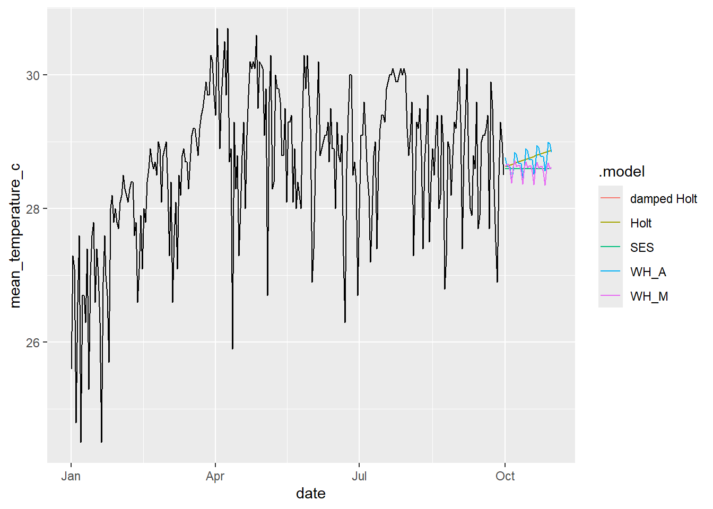
fit_autoETS <- Changi_train_imputed %>%
model(ETS(mean_temperature_c))
fit_autoETS %>% report()Series: mean_temperature_c
Model: ETS(A,N,N)
Smoothing parameters:
alpha = 0.2852897
Initial states:
l[0]
26.32362
sigma^2: 0.7308
AIC AICc BIC
1456.047 1456.136 1466.887 gg_tsresiduals(fit_autoETS)7.2.7 Forecasting future values
fit_autoETS %>%
forecast(h = "30 days") %>%
autoplot(Changi_train_imputed)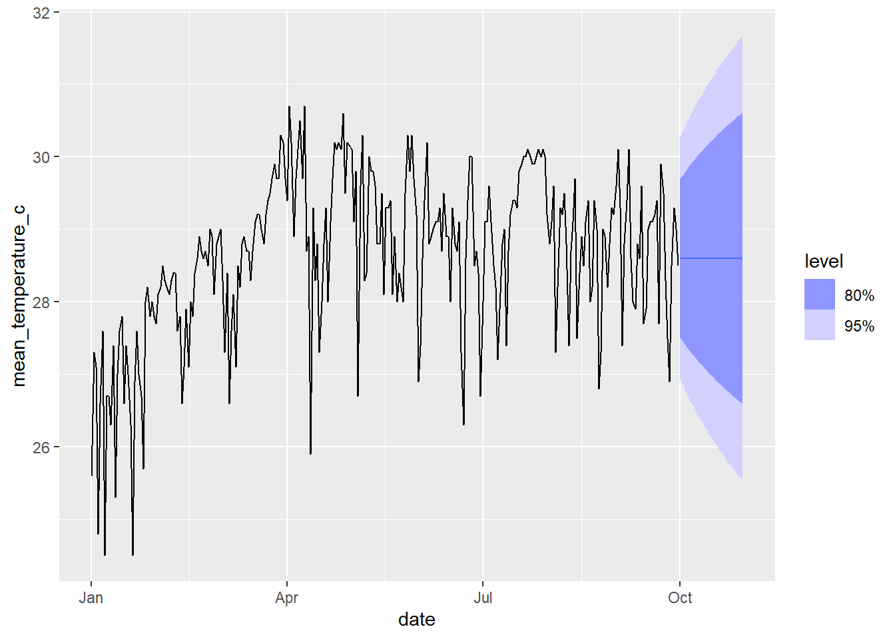
7.2.8 Visualising AutoETS model with ggplot2
fc_autoETS <- fit_autoETS %>%
forecast(h = "30 days")
Changi_train_imputed %>%
ggplot(aes(x=`date`,
y=mean_temperature_c)) +
autolayer(fc_autoETS,
alpha = 0.6) +
geom_line(aes(
color = Type),
alpha = 0.8) +
geom_line(aes(
y = .mean,
colour = "Forecast"),
data = fc_autoETS) +
geom_line(aes(
y = .fitted,
colour = "Fitted"),
data = augment(fit_autoETS))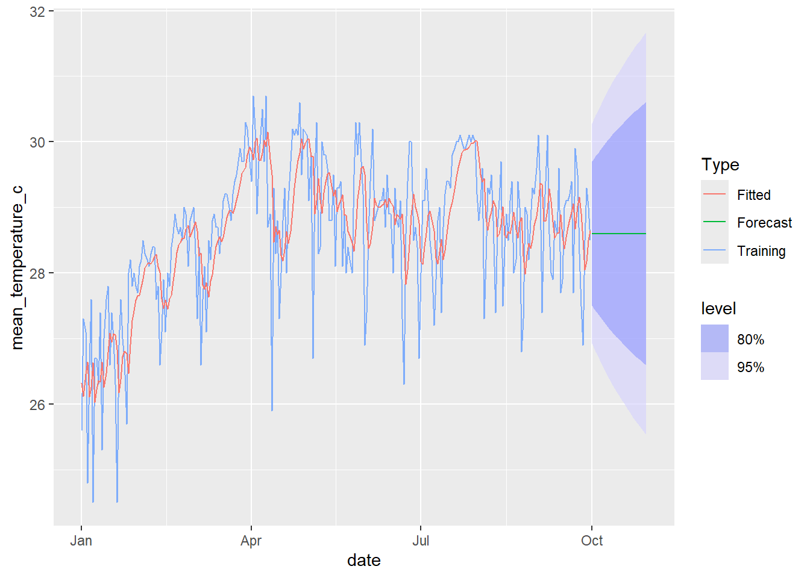
8.0 ARIMA Method
8.1 Fitting ARIMA model
fit_autoARIMA <- Changi_train_imputed %>%
model(ARIMA(mean_temperature_c))
report(fit_autoARIMA)Series: mean_temperature_c
Model: ARIMA(1,1,3)(2,0,0)[7]
Coefficients:
ar1 ma1 ma2 ma3 sar1 sar2
-0.9599 0.4075 -0.7461 -0.2559 -0.0670 -0.1490
s.e. 0.0364 0.0694 0.0525 0.0632 0.0676 0.0647
sigma^2 estimated as 0.6832: log likelihood=-333.01
AIC=680.02 AICc=680.44 BIC=705.29Changi_training <- Changi_train_imputed %>% filter(Type == "Training")Changi_multi <- Changi_training %>%
model(
ets = ETS(mean_temperature_c),
arima = ARIMA(mean_temperature_c)
)Changi_multi %>%
glance()# A tibble: 2 × 12
station .model sigma2 log_lik AIC AICc BIC MSE AMSE MAE ar_roots
<chr> <chr> <dbl> <dbl> <dbl> <dbl> <dbl> <dbl> <dbl> <dbl> <list>
1 Changi ets 0.731 -725. 1456. 1456. 1467. 0.725 0.817 0.659 <NULL>
2 Changi arima 0.683 -333. 680. 680. 705. NA NA NA <cpl>
# ℹ 1 more variable: ma_roots <list>Changi_forecast <- Changi_multi %>%
forecast(h = "30 days")Changi_forecast %>%
autoplot(Changi_training)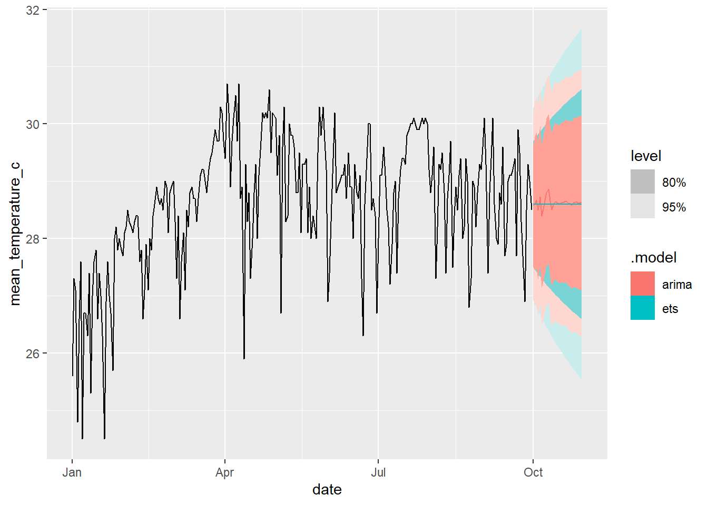
8.2 Multi station ARIMA
ts_data %>% model(ARIMA(mean_temperature_c)) %>%
forecast(h = "7 days") %>%
autoplot(ts_data)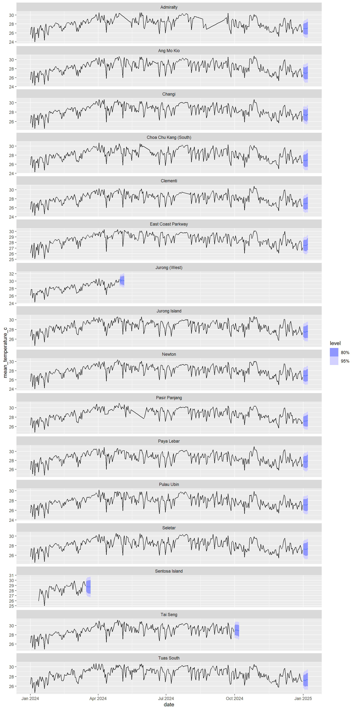